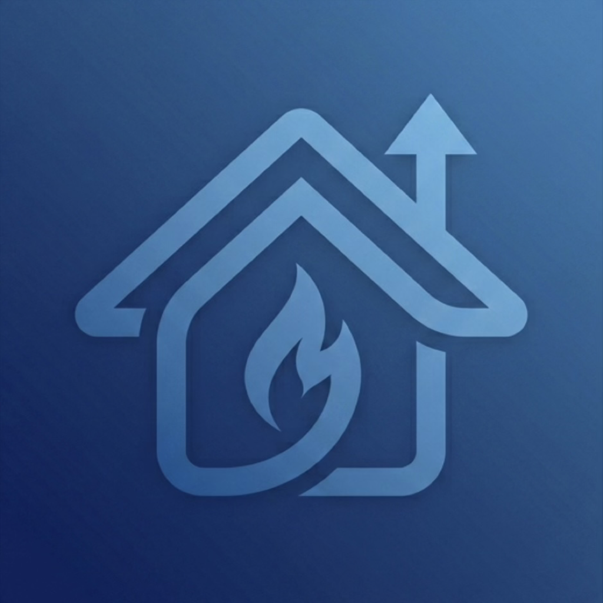
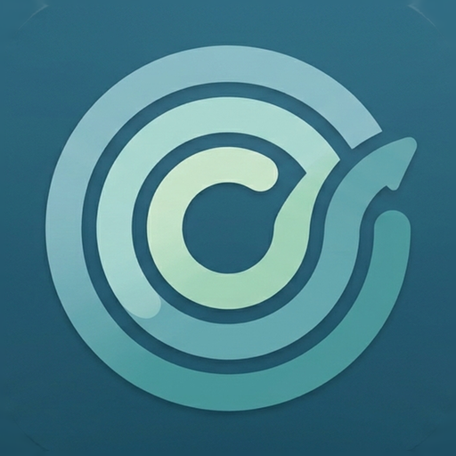

Een kleine onafhankelijke appstudioA small independent app studioEin kleines unabhängiges App-Studio
Digitaal gemak.
Op jouw voorwaarden.
Everyday ease.
On your terms.
Digitaler Komfort.
Zu deinen Bedingungen.
Met aandacht gemaakt voor de dingen die je elke dag doet. Vanuit de polder, voor jou.
Made with care for the things you do every day. From the Dutch polders, for you.
Mit Sorgfalt gemacht für die Dinge, die du jeden Tag tust. Aus dem Polder, für dich.
Grim Reader In de App StoreOn the App StoreIm App Store
Een wereld
aan verhalen.
A world
of stories.
Eine Welt
voller Geschichten.
Je eigen boeken, strips en luisterboeken. Alles bij elkaar, klaar voor je volgende hoofdstuk.
Your own books, comics and audiobooks. All together, ready for your next chapter.
Deine eigenen Bücher, Comics und Hörbücher. Alles beisammen, bereit für dein nächstes Kapitel.
Ontdek Grim ReaderDiscover Grim ReaderGrim Reader entdeckenKleine apps. Groot dagelijks plezier.Small apps. Everyday pleasures.Kleine Apps. Große Alltagsfreude.
Ontdek de collectie
Explore the collection
Entdecke die Auswahl
Grim Reader
Je eigen boeken, strips en luisterboeken. Altijd dichtbij.
Your own books, comics and audiobooks. Always close.
Deine eigenen Bücher, Comics und Hörbücher. Immer dabei.
In de App StoreOn the App StoreIm App Store
Thuis
Een helder beeld van de energie in je eigen huis.
A clear view of the energy in your own home.
Ein klarer Blick auf die Energie in deinem Zuhause.
In ontwikkelingIn developmentIn Entwicklung
Grip op je Dag
Een rustig visueel dagschema voor kinderen.
A calm visual day schedule for children.
Ein ruhiger visueller Tagesplan für Kinder.
In ontwikkelingIn developmentIn Entwicklung- Geen trackingNo trackingKein Tracking
- Geen advertentiesNo adsKeine Werbung
- Geen accountsNo accountsKeine Konten
- Met aandacht gemaaktMade with careMit Sorgfalt gemacht
Gebouwd vanuit
nieuwsgierigheid.Built out of
curiosity.Aus Neugier
entstanden.
Deze apps zijn gemaakt door Maarten de Kreij, met AI als programmeerhulp. Het zijn kleine, zelf ontwikkelde projecten, gebouwd uit nieuwsgierigheid.
These apps are made by Maarten de Kreij, with AI as a programming aid. They are small, self-developed projects, made out of curiosity.
Diese Apps macht Maarten de Kreij, mit KI als Programmierhilfe. Es sind kleine, selbst entwickelte Projekte, entstanden aus Neugier.
Het verhaal achter Grim ReaderThe story behind Grim ReaderDie Geschichte hinter Grim ReaderGemaakt voor iedereen.
Made for everyone.
Für alle gemacht.
Deze apps en deze website zijn gemaakt om voor zoveel mogelijk mensen bruikbaar te zijn — ook met een schermlezer of zonder muis.
These apps and this website are built to be usable by as many people as possible — including with a screen reader or without a mouse.
Diese Apps und diese Website sind so gebaut, dass möglichst viele Menschen sie nutzen können — auch mit Screenreader oder ohne Maus.
Meer over toegankelijkheidMore about accessibilityMehr über BarrierefreiheitEen vraag of een idee?
A question or an idea?
Eine Frage oder eine Idee?
Iets werkt niet, of wil je meer weten? Lees de kennisbank, stel je vraag of laat weten wat er beter kan.
Something not working, or want to know more? Read the knowledge base, ask a question or share what could be better.
Funktioniert etwas nicht, oder möchtest du mehr wissen? Lies die Wissensdatenbank, stelle eine Frage oder schlage eine Verbesserung vor.
Naar Help & supportGo to Help & supportZu Hilfe & Support